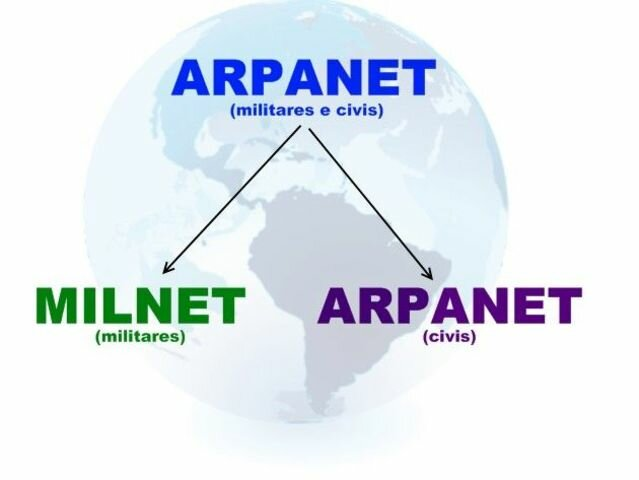
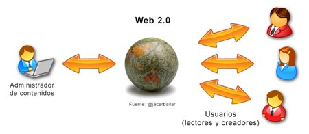
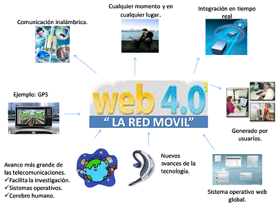

John Ramírez Castillo


| Año | Evento | Descripción | Imagen |
|---|---|---|---|
| 1957 | Nace ARPA | Se funda la Agencia de Proyectos de Investigaciones Avanzadas | |
| 1969 | Llegada a la luna | El hombre llega a la luna, marcando inicio a las comunicaciones globales | |
| Creación de ARPANET | ARPA,partiendo del conocimiento del campo de las tecnologías crea ARPANET | |
|
| 1980 | Protocolo HTML | Primera aparicion del lenguaje de marcado de hipertextos | |
| 1989 | Protocolo HTTP | Se crea el protocolo de transferencia de hipertextos | |
| 1990 | ARPANET se desmantela | Aparecen Milnet e Internet |  |
| Web 1.0 | Aparece la web 1.0. Son páginas simples para leer textos | |
|
| 1991 | WWW | Tim Bernes-Lee crea la World Wide Web | |
| URL | Se crean las url, dirrecciones para cada recurso en la red | ||
| 1995 | Wiki | Collecion de paginas de hipertextos | |
| 1998 | Lenguaje RDF | Es un lenguaje para la representación de la información sobre los recursos en la web | |
| 1999 | RSS | Permite que los agregadores presenten el contenido de una página sin visitarla | |
| CMS | Permite crear un entorno de trabajo para la creación y administración de contenido | ||
| 2001 | Web semántica | Se enfoca en utilizar el entendimineto de la información por la máquina para promover una red semántica | |
| 2004 | Web 2.0 | Permite la union de grupos globales de personas con intereses similares, ofrecía interacción social |  |
| 2005 | Web 3.0 | Está basada en la apertura, descentralización y mayor utilidad para el usuario | |
| 2015 | Web 4.0 | Marcada por el incremento en uso de las redes sociales y móviles. Permite experiencias sociales más personalizadas e interactivas. |  |